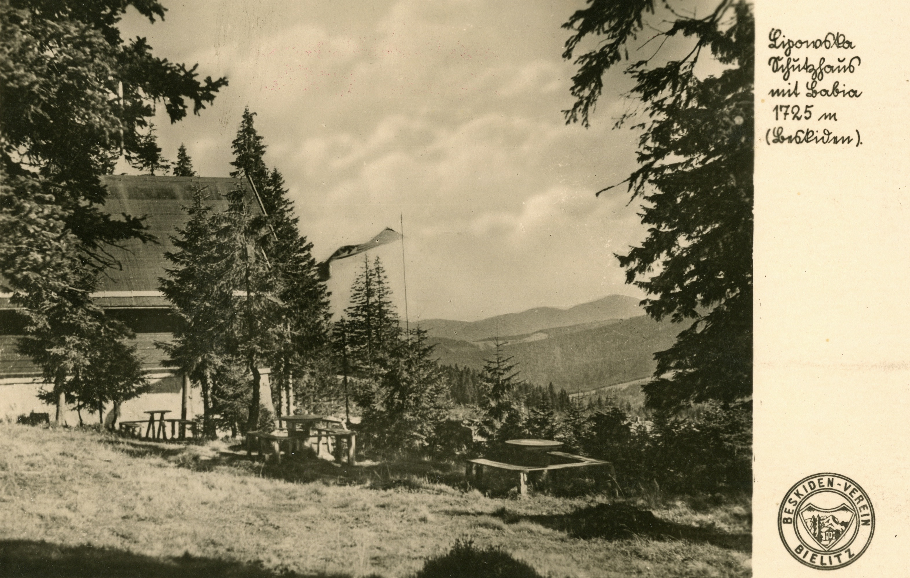
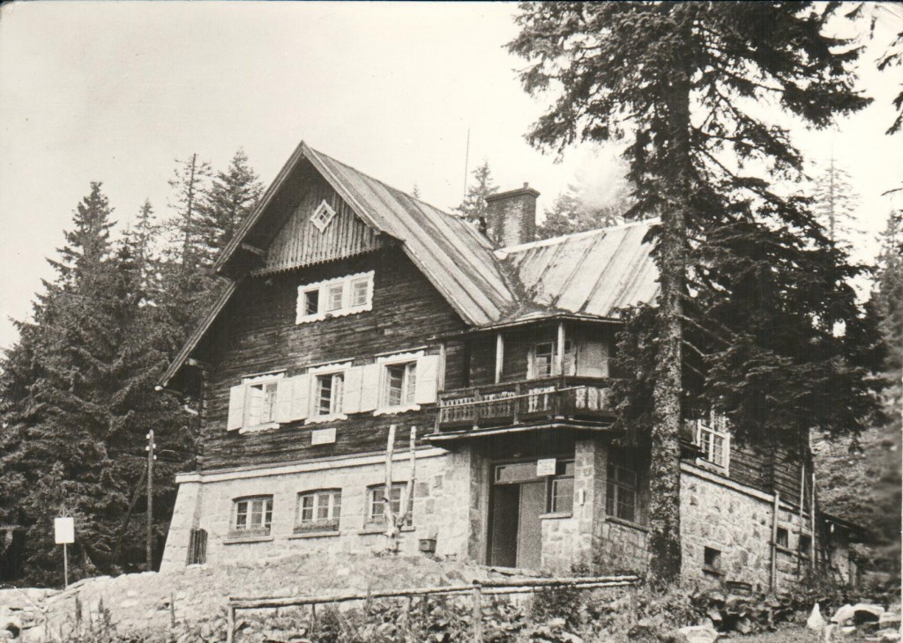
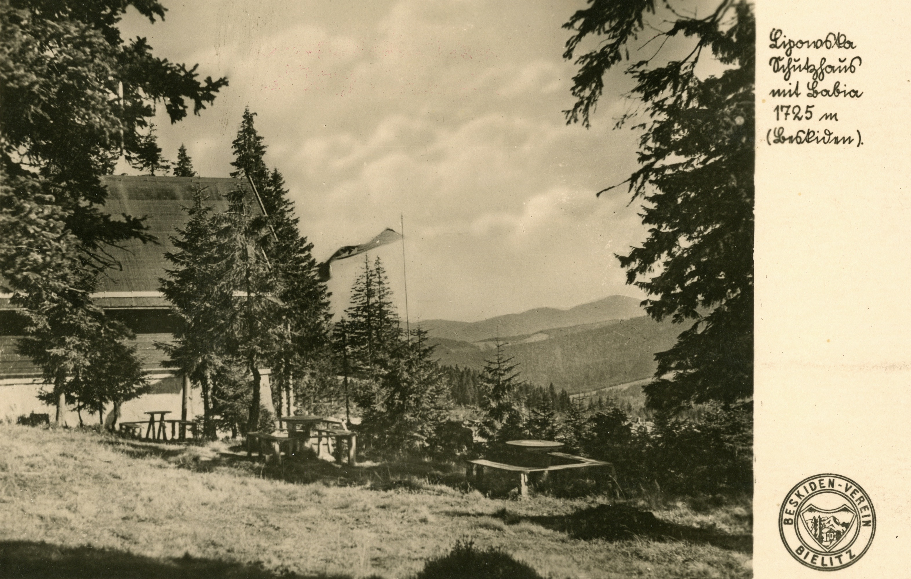
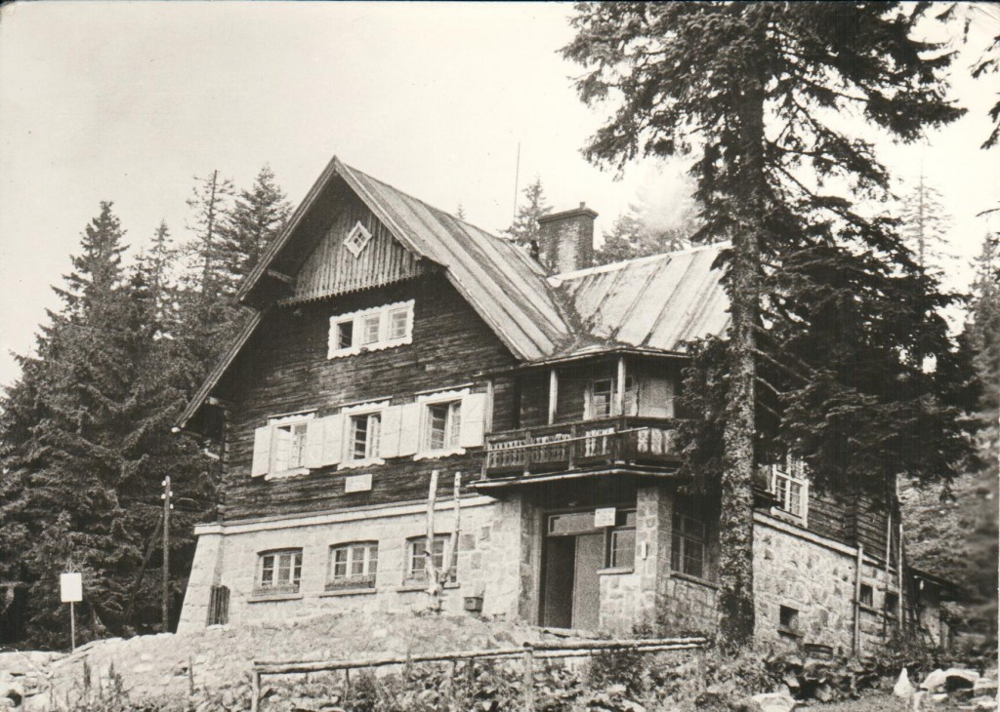

1930
niemiecka organizacja turystyczna Beskiden-Verein rozpoczyna budowę schroniska na zboczach Lipowskiego Wierchu.
1931
schronisko rozpoczyna swoją działalność, budowa jednak nadal trwa, ukończona zostaje rok później. Schronisko zostaje nazwane imieniem dr Edwarda Stonawskiego- na cześć ówczesnego prezesa bielskiego oddziału Beskiden-Verein.
1939 -- 1944
w czasie II Wojny Światowej schronisko odwiedzali nieliczni turyści, było ono miejscem odpoczynku niemieckich żołnierzy, którzy opuścili je z końcem 1944 roku.
1946
ponad rok po zakończeniu działań wojennych schronisko stało opuszczone, w tym czasie doszło do zdewastowania budynku i kradzieży mienia. Obiekt przejął Żywiecki Oddział PTT, przeprowadził niezbędne naprawy i schronisko ponownie zaczęło przyjmować turystów.
1953
obiekt w bardzo złym stanie technicznym zostaje przejęty przez Zakład Urządzeń Turystycznych PTTK.
1969
gospodarzami Lipowskiej zostają Maria i Zbigniew Gowin.
1973
rozpoczyna się generalna modernizacja schroniska wraz z przyległą infrastrukturą
1976
zamknięcie obiektu dla ruchu turystycznego, Gowinowie na czas ukończenia prac otrzymują kierownictwo w nowo otwartej bacówce PTTK na Krawcowym Wierchu.
1980
odebranie prac budowlanych i ponowne otwarcie praktycznie nowego schroniska, ze starego obiektu pozostała tylko kamienna podmurówka.
 


